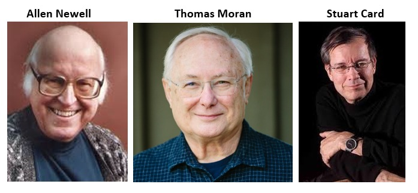

Don Norman
Donald Arthur Norman (b. 1935) is a pioneer in Human–Computer Interaction (HCI), known for user-centered design and usability engineering.
Education & Career
- B.S. Electrical Engineering, MIT; M.S. & Ph.D. Psychology, University of Pennsylvania
- Faculty: UCSD, Harvard, Northwestern, KAIST
- Industry: VP at Apple, HP executive, IDEO Fellow, co-founder of Nielsen Norman Group
Contributions
- Popularized User-Centered Design (UCD) / Human-Centered Design (HCD)
- Shaped modern User Experience (UX)
References
GOMS & KLM Creators – Brief Biographies
Stuart K. Card
American HCI pioneer and researcher at Xerox PARC. Co-authored The Psychology of Human-Computer Interaction (1983), where GOMS was first described. Developed models like the Model Human Processor and contributed to information visualization.
Thomas P. Moran
American computer scientist and HCI researcher. Worked at Xerox PARC with Card and Newell. Co-wrote The Psychology of Human-Computer Interaction (1983) and founded the journal Human–Computer Interaction. Focused on modeling user behavior and improving interface design.
Allen Newell (1927–1992)
American cognitive scientist and AI pioneer. Co-developed early AI programs like Logic Theorist and General Problem Solver, co-founded CMU’s AI Lab, and advanced cognitive architectures (Soar). Partnered with Card and Moran at Xerox PARC to develop GOMS and other cognitive models.